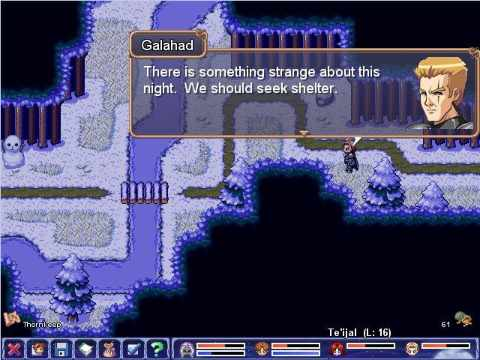
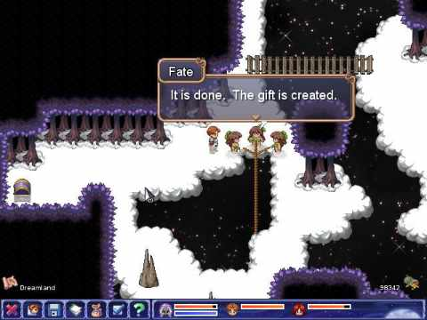
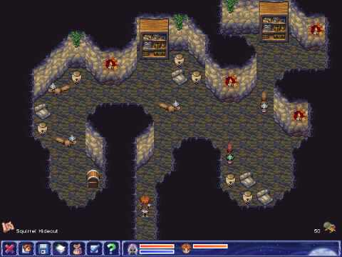
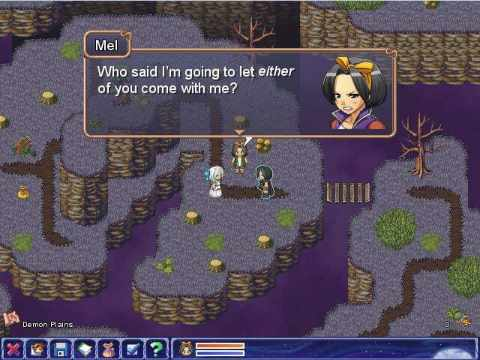

Mel has gone into hiding after she discovers she can use magic. To make matters worse, wicked creatures called Darklings keep popping up, convinced that Mel is the prophesied one who will build a dark empire for them.
Edward, the ousted heir to the throne of Thais, who is also Mel's best friend, eventually finds her hiding in the village of Harakauna. To her dismay, he's brought along two professors from a prestigious magical school called Shadwood Academy. Will they convince Mel to go to a school where she can learn to control her powers?
In this final installment of the Orbs of Magic series, Te'ijal, Galahad, Edward, Stella, and Mel come together to stop the Darkthrop Prophecy from occurring. Will they succeed?
(Also available for Windows and Mac)Need some help? Get the Official Strategy Guide!
Price: $4.99
Category: Aveyond, RPG
Publisher: Aveyond Studios, RadialApps
 Download Size: 130MB
Download Size: 130MB Linux (Ubuntu 12.04+, Fedora etc.)
RAM: 1GB recommended
Hard Disk Space: 150MB
Discuss this game in the forum
|  |  |
|  |  |
- Download the demo here.
- Place the downloaded file in your home directory. To make sure that the game supports all systems, we have created an install-free package.
- Right click the file and select "Extract Here".
- If you don't see such an option, you may alternatively go to the terminal and run:
- This will extract the contents of the package.
- Go to the directory and run the file "aveyond" by double clicking on it and choosing Run.
- If you cannot run the file, right click it and click properties. Check Allow executing file. Repeat this step for the files "engine-x86" and "engine-amd64" Alternatively, you may go to the directory in terminal and run the following command:
gunzip aveyond34demo.tar.gz
tar -xvf aveyond34demo.tar
chmod 777 aveyond engine*and then use
./aveyondto run the game.
Enjoy the game!
How to run the game?
Aveyond for Linux is completely DRM-free. Once you buy the game, you will be provided with a tar.gz file just like the demo. Follow the same instructions to run the game!
Please try out the trial demo before buying to be sure that your system supports the game.